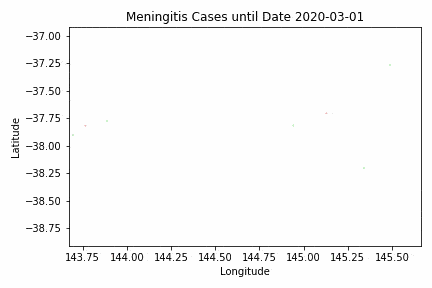

Mapping Meningitis
Problem
Meningitis is spreading through Melbourne at a previously unprecedented rate. To investigate, your clinical supervisor has acquired a text file of abridged and deidentified CSF results from patients with suspected meningitis in Melbourne over a 24-week period starting from March 1st 2020.
Here is the first result. You have a collection of 1000 results in this format.
PATIENT ID: 882490
LOCATION: (-36.852366,145.388525)
SAMPLE TIMESTAMP: 2020-05-17
RESULTS:
Turbid.
CELL COUNT: 164.47 x 10^6 / L (lymphocytic predominance)
GLUCOSE: 3.75 mmol/L
LACTATE: 1.99 mmol/L
PROTEIN: 0.22 g/LYour task is to:
-
Process and classify each result as most suggestive of no-infection, bacterial, viral or fungal meningitis.
-
Plot a visual representation, of cases, their classification of meningitis, and their location over the 24-week period from March 1st 2020.
-
Interpret your findings.
Click here to download your text input (332KB, .txt).
You may find The RCPA Manual on CSF interpretation to be useful for this problem.
Solution
Click here to show the answer.
[2019-08-05 Mon 17:03] - Updated with GIF.
Here's a plot of cases by latitude and longitude as an animated GIF with steps of one week. We haven't put a legend on here yet, but red indicates bacterial meningitis, green indicates viral, and blue indicates fungal (grey indicates none). Transparencies indicate time - the earliest cases are most transparent, later cases are more opaque.

We can see there's a cluster of bacterial meningitis cases popping up around a coordinate near (-37.8, 145.0). Plotting the coordinates on a map might be helpful.
Click here to show the solution.
We haven't explained this step-by-step in full yet, but here's the solution as it stands at the moment. A more detailed explanation will appear shortly.
import re
import pandas as pd
import PIL
import glob
from enum import Enum
from datetime import datetime, timedelta
from matplotlib import pyplot as plt
from matplotlib import colors
from typing import List, Tuple
SEPARATOR = '-' * 80
with open('input-mapping-meningitis.txt') as infile:
RAW = infile.read().split(SEPARATOR)
MATCH_RE = (
'ID:\s+(\d+).*'
'ON:\s+\((.*?),(.*?)\).*'
'MP:\s+([\d\-]*).*'
'NT:\s+([\.\d]*).*'
'\((.*)\).*'
'SE:\s+([\.\d]*).*'
'TE:\s+([\.\d]*).*'
'IN:\s+([\.\d]*).*'
)
MATCHER = re.compile(MATCH_RE, re.DOTALL)
DATA = [MATCHER.findall(record)[0] for record in RAW]
DATAFRAME = pd.DataFrame(
DATA,
columns=[
'patient_id',
'latitude',
'longitude',
'date',
'cell_count',
'predominance',
'glucose',
'lactate',
'protein',
]
)
DATAFRAME = DATAFRAME.astype({
'latitude': float,
'longitude': float,
'cell_count': float,
'glucose': float,
'lactate': float,
'protein': float
})
DATAFRAME['date'] = pd.to_datetime(DATAFRAME['date'])
class ResultType(Enum):
NOT_MENINGITIS = 0
BACTERIAL = 1
VIRAL = 2
FUNGAL = 3
# Simplified, based on RCPA manual
def classify(row) -> ResultType:
if row.cell_count > 5:
if row.glucose < 2.8:
if 'polymorphonuclear' in row.predominance:
return ResultType.BACTERIAL
elif 'lymphocytic' in row.predominance:
return ResultType.FUNGAL
else:
return ResultType.NOT_MENINGITIS
else:
if 'lymphocytic' in row.predominance:
return ResultType.VIRAL
else:
return ResultType.NOT_MENINGITIS
else:
return ResultType.NOT_MENINGITIS
DATAFRAME['classification'] = DATAFRAME.apply(classify, axis=1)
ORDINAL_DAYS = DATAFRAME["date"].apply(lambda x: x.toordinal())
INTENSITIES = (ORDINAL_DAYS - min(ORDINAL_DAYS)) / max(ORDINAL_DAYS - min(ORDINAL_DAYS))
def result_type_to_color(result_type: ResultType) -> Tuple[float, float, float]:
if result_type == ResultType.NOT_MENINGITIS:
return (0, 0, 0.7)
elif result_type == ResultType.BACTERIAL:
return (0, 0.8, 0.8)
elif result_type == ResultType.VIRAL:
return (0.33, 0.8, 0.8)
else:
return (0.66, 0.8, 0.8)
def make_colors(cases: pd.DataFrame) -> List[Tuple[float, float, float]]:
return [
colors.hsv_to_rgb(result_type_to_color(result))
for result in cases["classification"]
]
MIN_LAT, MAX_LAT = DATAFRAME.latitude.min(), DATAFRAME.latitude.max()
MIN_LONG, MAX_LONG = DATAFRAME.longitude.min(), DATAFRAME.longitude.max()
DATE_MIN = DATAFRAME.date.min()
DATE_MAX = DATAFRAME.date.max()
current_date = DATE_MIN
for i_day in range(0, (DATE_MAX - DATE_MIN).days, 7):
last_date = current_date
current_date = DATE_MIN + timedelta(days=i_day)
cases_today = DATAFRAME[(DATAFRAME.date > last_date) & (DATAFRAME.date <= current_date)]
cases_prior = DATAFRAME[DATAFRAME.date <= last_date]
fig, ax = plt.subplots()
ax.scatter(
cases_today['longitude'],
cases_today['latitude'],
c=make_colors(cases_today),
s=3,
)
ax.scatter(
cases_prior['longitude'],
cases_prior['latitude'],
c=make_colors(cases_prior),
s=2,
alpha=0.2
)
ax.set_xlim((MIN_LONG, MAX_LONG))
ax.set_ylim((MIN_LAT, MAX_LAT))
plt.ylabel('Latitude')
plt.xlabel('Longitude')
plt.title(f'Meningitis Cases until Date {current_date:%Y-%m-%d}')
plt.tight_layout()
plt.savefig(f'mapping-meningitis/{current_date:%Y-%m-%d}.png')
plt.close()
frame_filenames = glob.glob('./mapping-meningitis/*.png')
frame_filenames.sort()
frames = [PIL.Image.open(file) for file in frame_filenames]
frames[0].save(
'mapping-meningitis.gif',
format='GIF',
append_images=[frames[0]]*10 + frames + [frames[-1]] * 10,
save_all=True,
duration=100,
loop=0
)Data Generation
Click here to show the data generation code.
We can generate this data using simple string templating and functions provided by various libraries to produce either random numbers of random choices.
We will:
-
Represent a CSF result for a particular sample belonging to a particular patient as a Python
dataclass, -
Write functions to randomly generate a CSF result based on whether we want the result to reflect a bacterial, viral or fungal/TB meningitis,
-
Generate the data by randomly selecting what type of result to generate with parameters based on location and time.
First, we enumerate constants to express the non-numerical results from a CSF report.
from enum import Enum
class Appearance(Enum):
""" Enumerates possible macroscopic appearances of CSF.
"""
CLEAR = "Clear and colourless."
TURBID = "Turbid."
XANTHOCHROMIC = "Xanthrochromic."
BLOODY = "Grossly bloody."
class Predominance(Enum):
""" Enumerates possible cell predominances of CSF.
"""
NEITHER = "predominance unspecified"
NEUTROPHILS = "polymorphonuclear predominance"
LYMPHOCYTES = "lymphocytic predominance"
Next, we create dataclass for the CSF result for convenience. We can simply
instantiate a new instance of this dataclass for each result, and call a method
to_string to convert an instance to a string representation of the report. As
a reference, we found The RCPA Manual a good resource on what the CSF result
should look like.
from datetime import datetime
from dataclasses import dataclass
from typing import Tuple
@dataclass
class CSFResult:
""" Dataclass to hold cerebrospinal fluid results.
"""
patient_id: int
sample_datetime: datetime
location: Tuple[float, float] # latitude, longitude
appearance: Appearance
cell_count: float # Units e6/L
predominance: Predominance
glucose: float # Units mmol/L
lactate: float # Units mmol/L
protein: float # Units g/L
def to_string(self) -> str:
"""
Converts a CSF result into a string.
"""
result_string = (
f"\nPATIENT ID: {self.patient_id:06}\n"
f"LOCATION: ({','.join(map(lambda x: f'{x:.6f}', self.location))})\n"
f"SAMPLE TIMESTAMP: {self.sample_datetime:%Y-%m-%d}\n\n"
f"RESULTS:\n"
f"{self.appearance.value}\n\n"
f"CELL COUNT: {self.cell_count:.2f} x 10^6 / L ({self.predominance.value})\n"
f"GLUCOSE: {self.glucose:.2f} mmol/L\n"
f"LACTATE: {self.lactate:.2f} mmol/L\n"
f"PROTEIN: {self.protein:.2f} g/L\n"
)
return result_stringNext, we will write a function to generate a random result based on whether we want the result to be most suggestive of a bacterial, viral or fungal infection. For simplicity, we will specify the differences between these infections as purely based on the CSF result; in practice, CSF results must always be interpreted in the context of the whole patient and other clinical information.
First, we enumerate the types of results.
class ResultType(Enum):
""" Enumerates the possible CSF result types.
"""
NORMAL = 0
BACTERIAL = 1
VIRAL = 2
FUNGAL = 3
Next, we specify a generation function which takes a ResultType and returns a
CSFResult instance which reflects it.
from random import choices, gauss, uniform
def generate_result(result_type: ResultType, **kwargs) -> CSFResult:
""" Generates a CSFResult instance based on result_type.
Most of the generation is defining parameters for random selection.
For randomly selecting Appearance, the order of defining weights is:
[CLEAR, TURBID, XANTHROCHROMIC, BLOODY]
For randomly selecting Predominance, the order of defining weights is:
[NEITHER, NEUTROPHILS, LYMPHOCYTES]
Parameters
----------
result_type: ResultType
One of ResultType.BACTERIAL, ResultType.VIRAL or ResultType.FUNGAL.
,**kwargs
Extra kwargs passed to CSFResult constructor. It should include
patient_id, sample_datetime and location.
"""
if result_type == ResultType.NORMAL:
result = CSFResult(
appearance=Appearance.CLEAR,
cell_count=max(0.1, gauss(2.5, 2.5)),
predominance=Predominance.NEITHER,
glucose=max(2.5, gauss(3.6, 0.4)),
lactate=max(1.0, gauss(2.0, 0.4)),
protein=max(0.1, gauss(0.3, 0.1)),
**kwargs,
)
elif result_type == ResultType.BACTERIAL:
result = CSFResult(
appearance=choices(list(Appearance), [1, 10, 0.01, 0.1])[0],
cell_count=max(10, gauss(5000, 4000)),
predominance=Predominance.NEUTROPHILS,
glucose=max(0.1, gauss(1.0, 0.5)),
lactate=max(1.2, gauss(3.5, 1.0)),
protein=max(0.2, gauss(2.5, 1.0)),
**kwargs,
)
elif result_type == ResultType.VIRAL:
result = CSFResult(
appearance=choices(list(Appearance), [4, 6, 0.01, 0.1])[0],
cell_count=max(10, gauss(100, 50)),
predominance=Predominance.LYMPHOCYTES,
glucose=max(2.5, gauss(3.6, 0.4)),
lactate=max(1.0, gauss(2.0, 0.4)),
protein=max(0.1, gauss(0.3, 0.1)),
**kwargs,
)
elif result_type == ResultType.FUNGAL:
result = CSFResult(
appearance=choices(list(Appearance), [1, 10, 0.01, 0.1])[0],
cell_count=max(10, gauss(400, 300)),
predominance=Predominance.LYMPHOCYTES,
glucose=max(0.1, gauss(1.0, 0.5)),
lactate=max(1.2, gauss(2.5, 2.0)),
protein=max(0.2, gauss(1.5, 1.0)),
**kwargs,
)
return resultWe next specify a dataset generation function which will generate a list of 1000 patient IDs, locations, sample datetimes and result types. We will define a central coordinate from which bacterial cases will originate from, and intermix them with non-related cases.
For simplicity, we will define coordinates using floating point numbers; this isn't a particularly good system though for "real-life" dealings with latitude and longitude where the precision of floating point numbers cannot be guaranteed. For simpliciy, we've also made the
from datetime import timedelta
from random import sample
from typing import Tuple
import numpy as np
# Define constant parameters
SOURCE_LAT, SOURCE_LONG = (-37.8180, 144.9691)
SPREAD = 0.003 # per day
DURATION = 168 # in days, i.e. 24 weeks
NUM_SAMPLES = 1000
START_DATE = datetime(2020, 3, 1)
NUM_ABERRANT = 300 # number of "aberrant" cases
BOUND_LAT, BOUND_LONG = (1.0, 1.0) # bounds of map
# Generate random time deltas from day 0
day_deltas = choices(range(DURATION), k=NUM_SAMPLES)
# Create dates from day_deltas (randomly ordered)
dates = [START_DATE + timedelta(days=day_delta) for day_delta in day_deltas]
# Extract the first 600 as "aberrant" cases and make locations
def make_spread(delta: int) -> Tuple[float, float]:
radius = gauss(delta, 2*SPREAD) * SPREAD
angle = uniform(0, 2 * np.pi)
new_lat = SOURCE_LAT + radius * np.sin(angle)
new_long = SOURCE_LONG + radius * np.cos(angle)
return (new_lat, new_long)
locations_aberrant = [
make_spread(delta)
for delta in day_deltas[:NUM_ABERRANT]
]
locations_other = [
(SOURCE_LAT + uniform(-BOUND_LAT, BOUND_LAT) - 0.1,
SOURCE_LONG + uniform(-BOUND_LONG, BOUND_LONG) - 0.3)
for _ in day_deltas[NUM_ABERRANT:]
]
locations = locations_aberrant + locations_other
# Make result types
result_types_aberrant = [ResultType.BACTERIAL] * NUM_ABERRANT
result_types_other = choices(list(ResultType), [1, 3, 1, 0.5], k=NUM_SAMPLES-NUM_ABERRANT)
result_types = result_types_aberrant + result_types_other
# Generate random 6-digit patients IDs
patient_ids = sample(range(999999), k=NUM_SAMPLES)
# Generate all results
results = [
generate_result(
result_type=result_type,
patient_id=patient_id,
location=location,
sample_datetime=date,
)
for result_type, patient_id, location, date
in zip(result_types, patient_ids, locations, dates)
]Finally, we need to shuffle the results, join all the results into a single string and then save it to a file.
from random import shuffle
# Shuffle results in-place
shuffle(results)
# Define the separator
separator = "\n" + "-" * 80 + "\n"
# Join result strings with separator
output = separator.join(result.to_string() for result in results)
# Save the output to a file
FILENAME = "input-mapping-meningitis.txt"
with open(FILENAME, 'w+') as outfile:
outfile.write(output)
This generates the input data and saves it into the file
input_mapping_meningitis.txt.